건축산업기사 (2007-03-04 기출문제)
1과목: 건축계획
1. 공간 건축계획에 대한 설명 중 옳지 않은 것은?
- 계획시부터 증축에 대한 고려를 해야 한다.
- 평면은 가능한 요철이 없는 형이 바람직하다.
- 파빌리온형(pavillion type)의 공장형식은 통풍, 채광이 좋지 않다.
- 공장건축의 레이아웃 중 고정식 레이아웃은 조선소와 같이 제품이 크고 수량이 적은 경우에 행해진다.
(정답률: 89%)

2. 공동주택의 건물단면형 중 트리플렉스형에 대한 설명으로 옳지 않은 것은?
- 주택 내의 공간의 변화가 있다.
- 거주성, 특히 프라이버시가 높다.
- 유지관리비의 절감
- 프라이버시의 확보
(정답률: 10%)
3. 다음 중 오피스랜드스케이핑(office landscaping) 으로 옳지 않은 것은?
- 공간이용의 효율성 향상
- 사무능률의 향상
- 유지관리비의 절감
- 프라이버시의 확보
(정답률: 67%)
4. 다음의 주택계획에 관한 설명 중 옳지 않은 것은?
- 현관문은 미닫이보다 여닫이로 하는 것이 좋다.
- 침실은 현관에서 멀리 떨어진 곳으로 조용한 공지에 면하게 하는 것이 좋다.
- 50m2정도의 소규모 주택에서는 식사공간을 침실과 겸용하는 것이 좋다.
- 현관은 간단한 접객의 용무를 겸하는 이외의 불필요한 공간을 두지 않는 것이 좋다.
(정답률: 86%)
5. 다음의 사무소 건축에 관한 설명 중 틀린것은?
- 준 대여 사무소는 건물의 주요부분을 자기 전용으로 하고 나머지를 대실하는 형태이다.
- 사무소 건축의 관리상 분류에 있어서 정부종합청사는 준전용 사무소 성격을 띤다.
- 사무소의 층고와 깊이는 사용목적, 채광, 공사비 등에 의해 결정된다.
- 복도형식 중 2중지역 배치는 중규모 크기의 사무소 건물에 적합하다.
(정답률: 73%)
6. 다음의 상점계획에 대한 설명 중 옳지 않은 것은?
- 종업원 동선은 고객의 동선과 교차되는 것이 바람직하고, 가급적 보행거리를 길게 한다.
- 상점의 총면적이란 일반적으로 건축면적 가운데 영업을 목적으로 사용되는 면적을 말한다.
- 고객의 동선은 원활하게 하면서 가급적 길게 하는 것이 좋다.
- 쇼윈도의 바닥높이는 상품의 종류에 따라 높낮이를 결정하게 된다.
(정답률: 70%)
7. 근린생활권의 주택지의 단위 중 근린주구의 중심시설에 해당되지 않는 것은?
- 초등학교
- 유치원
- 병원
- 도서관
(정답률: 16%)
8. 공동주택에 관한 설명 중 옳지 않은 것은?
- 동일한 규모의 단독주택보다 대지비나 건축비가 적게 든다.
- 주거환경의 질을 높일 수 있다.
- 단독주택보다 독립성이 크다.
- 도시생활의 커뮤니티화가 가능하다.
(정답률: 알수없음)
9. 학교운영방식 중 종합 교실 형에 관한 설명으로 옳지 않은 것은?
- 교실의 이용률을 높일 수 있다.
- 교실의 순수율을 높일 수 있다.
- 초등학교 저학년에 대하여 가장 적당한 형이다.
- 학생의 이동을 최소한으로 할 수 있고 학급마다 가정적인 분위기를 만들 수 있다.
(정답률: 75%)
10. 학교시설의 강당 및 실내체육관 계획에 대한 설명 중 옳지 않은 것은?
- 강당 겸 체육관인 경우 커뮤니티 시설로서 이용될 수 있도록 고려하여야 한다.
- 실내체육관의 크기는 농구코트를 기준으로 한다.
- 강당 겸 체육관인 경우 강당으로서의 목적에 치중하여 계획하는 것이 바람직하다.
- 강당의 크기는 반드시 전원을 수용할 수 있도록 할 필요는 없다.
(정답률: 알수없음)
11. 무창 방적 공장에 관한 설명으로 옳지 않은 것은?
- 방위에 무관하게 배치 계획할 수 있다.
- 실내 소음이 실외로 잘 배출되지 않는다.
- 온도와 습도 조정에 비용이 적게 든다.
- 외부 환경의 영향을 많이 받는다.
(정답률: 73%)
12. 백화점의 에스컬레이터의 배치 형식에서 점내의 점유 면적이 가장 작은 것은?
- 직렬식 배치
- 병렬 단속식 배치
- 병렬 연속식 배치
- 교차식 배치
(정답률: 70%)
13. 다음 중 쇼핑센터를 구성하는 주요 요소와 가장 관계가 먼 것은?
- 행점포
- 몰(mall)
- 코트(court)
- 터미널(terminal)
(정답률: 알수없음)
14. 학교의 배치형식 중 분산병렬형에 대한 설명으로 옳지 않은 것은?
- 구조계획이 복잡하고 규격형의 이용이 어렵다.
- 편복도로 할 경우 복도 면적이 너무 크고 단조로워 유기적인 구성을 취하기가 어렵다.
- 일종의 핑거 플랜(finger plan)이다.
- 일조ㆍ통풍 등 교실의 환경조건을 균등하게 할 수 있다.
(정답률: 43%)
15. 다음 중 공동주택의 인동간격을 결정하는 요소와 가장 관계가 먼 것은?
- 일조 및 통풍
- 소음방지
- 지하주차공간의 크기
- 시각적 개방감
(정답률: 47%)
16. 다음 중 사무소 건축의 기준층 평면 형태에 영향을 미치는 요소와 가장 관계가 먼 것은?
- 구조상 스팬의 한도
- 덕트, 배선, 배관 등 설비 시스템상의 한계
- 자연광에 의한 조명한계
- 지하 주차장의 주차간격
(정답률: 32%)
17. 다음 중 사무소 건물의 코어(core)형식에 관한 설명으로 옳지 않은 것은?
- 편심코어형은 일반적으로 소규모 사무소건물에 사용된다.
- 중심코어형은 구조코어로서 바람직한 형식이다.
- 중심코어형은 바닥 면적이 큰 경우에 많이 사용한다.
- 양측코어형은 방재상 가장 불리한 형식이다.
(정답률: 47%)
18. 상점건축에서 대면판매의 특징으로 옳은 것은?
- 진열면적이 커지고 상품에 친근감이 간다.
- 판매원의 정위치를 정하기 어렵고 불안정하다.
- 일반적으로 시계, 귀금속 상점 등에 사용된다.
- 상품의 설명이나 포장이 불편하다.
(정답률: 알수없음)
19. 주택에서 주부의 부담을 경감시키기 위한 방법 중 옳지 않은 것은?
- 필요 이상의 넓은 주거공간을 지항할 것
- 주부의 동선을 단축시킬 것
- 능률적인 부엌시설과 가사 실을 갖출 것
- 설비를 좋게 하고 되도록 기계화할 것
(정답률: 알수없음)
20. 아파트 형식 중에서 홀 형에 대한 설명으로 옳은 것은?
- 중복도형에 비해 대지에 대해서 건물이용도가 높다.
- 단위주호의 독립성을 높일 수 있다.
- 채광, 통풍 조건을 양호하게 할 수 없다.
- 기계적 환경조절이 반드시 필요한 형이다.
(정답률: 알수없음)
2과목: 건축시공
21. 건설공사 입찰에 있어 불공정 하도급 거래를 예방하고 하도급 계열화를 촉진하기 위한 목적으로 시행하는 제도는?
- 사전자격심사제도
- 부대입찰제
- 대안입찰
- 내역입찰
(정답률: 48%)
22. 창호 철물의 종류와 용도의 연결이 맞지 않는 것은?
- 자유 경첩 - 안팎개폐
- 래버토리힌지 - 중량문짝
- 크리센트 - 오르내리창
- 도어클로우저 - 자동닫이 장치
(정답률: 39%)
23. 다음 중 수량 산출시 에 재료의 산출 단의로서 맞는 것은?
- 계단난간 : m2
- 콘크리트 공사용 거푸집 : m2
- 유리블록 : m3 또는 매
- 천장 텍스, 수장 합판 : m3
(정답률: 32%)
24. 건축물의 터파기시에 발생되는 보일링 현상의 설명으로 옳은 것은?
- 연질의 점토지반에서 굴 착시 흙막이 바깥에 있는 흙의 중량과 지표 위의 적재중량을 못 견디어 저면의 흙이 흙막이 안으로 밀려 불룩하게 올라오는 현상
- 지하수위가 얕은 모래질 지반에서 지수성 있는 흙막이 벽을 사용해 굴착시 지하수위와 흙막이벽 저면과의 수위 차에 의해 물과 함께 모래가 부풀러 올라오는 현상
- 시공된 흙막이에 대한 수밀성이 불량하여 널말뚝의 틈새로 물고 사가 흘러들어 기초저면의 모래지반을 들어 올리는 현상
- 연질의 점토지반에서 굴 착시 흙막이 바깥에 있는 모래의 중량과 지표 위의 적재중량을 못 견디어 저면의 흙과 물이 흙막이 안으로 불룩하게 올라오는 현상
(정답률: 알수없음)
25. 유성페인트의 구성 성분으로 옳지 않은 것은?
- 안료
- 건성유
- 광명단
- 희석제
(정답률: 45%)
26. 콘크리트의 반죽질기 시험방법이 아닌 것은?
- 블리딩시험
- 슬럼프시험
- 구관입시험
- 리몰딩시험
(정답률: 47%)
27. 타일 붙임이 끝난 후 치장줄눈을 하기 위해 몇 시간이 경과한 때 줄눈파기를 하는 것이 가장 좋은가?
- 1시간
- 3시간
- 24시간
- 48시간
(정답률: 48%)
28. 거푸집의 박리제로 쓰이지 않는 것은?
- 동식물유
- 석유
- 크레오소오트
- 파라핀
(정답률: 알수없음)
29. ALC(Autoclaved Lightweight Concrete)의 물리적 성질 중 틀린 것은?
- 기건 비중은 보통콘크리트의 약 1/4정도이다.
- 열전도율은 보통콘크리트와 유사하나 단 열성은 우수하다.
- 불연재인 동시에 내화재료이다.
- 경량이어서 인력에 의한 취급이 용이하다.
(정답률: 알수없음)
30. 목재를 나란히 옆으로 대어 넓게 접합하는 것을 무엇이라고 하는가?
- 이음
- 맞춤
- 장부
- 쪽매
(정답률: 31%)
31. 건설공사 발주자의 위탁을 받은 대리인이 건설공사의 타당성 조사, 설계, 시공 등 전 과정에 참여하여 공기단축이나 공사비 절감을 위해 Project를 관리하는 계약방식을 무엇이라 하는가?
- Turn-Key
- Design-build
- Design-manage
- Construction Management
(정답률: 24%)
32. 타일의 크기가 10.8cm×10.8cm이고, 가로 세로 줄눈의 크기는 6mm일 때, 1m2를 시공할 타일의 정미수량은 몇 매인가?
- 95매
- 85매
- 82매
- 77매
(정답률: 알수없음)
33. 공통가설공사 항목이 아닌 것은?
- 규준틀
- 가설울타리
- 동력ㆍ용수 설비
- 안전설비
(정답률: 47%)
34. 파이프 회전봉의 선단에 커터를 장치한 것으로 지중을 파고 다시 회전시켜 빼내면서 모르타르를 분출시켜 지중에 소일 콘크리트 파일을 형성시킨 말뚝은?
- T.I.P 파일
- C.I.P 파일
- M.I.P 파일
- P.I.P 파일
(정답률: 55%)
35. 콘크리트의 물시멘트비에 관한 설명으로 옳지 않은 것은?
- 물시멘트비는 콘크리트 강도를 결정하는 중요한 요인이다.
- 물시멘트비를 크게 할수록 내구성이 좋아진다.
- 골재 중의 수분도 물시멘트비에 영향을 미친다.
- 물시멘트비는 물과 시멘트와의 질량비이다.
(정답률: 28%)
36. 다음 방수공법중 비교적 저렴하고 시공이 용이하며 지하실의 내방 수나 소규모인 지붕방 수 등과 같은 비교적 경미한 방수공법으로 채용되는 것은?
- 시멘트 액체 방수공법
- 아스팔트 방수공법
- 실링 방수공법
- 시이트 방수공법
(정답률: 58%)
37. 고로시멘트의 특징으로 틀린 것은?
- 건조수축이 현저하게 적다.
- 화학저항성이 높아 해수ㆍ공장폐수ㆍ하수 등에 접하는 콘크리트에 적합하다.
- 수화열이 적어 매스콘크리트에 유리하다.
- 장기간 습윤 보양이 필요하다.
(정답률: 62%)
38. 한 켜는 마구리쌓기, 다음 켜는 길이쌓기로 하고 모서리 벽 끝에 이오토막을 쓰는 쌓기 방법은?
- 영식 쌓기
- 화란식쌓기
- 미식 쌓기
- 불식 쌓기
(정답률: 17%)
39. 다음 유리의 종류 중 주로 방화 및 방재용으로 사용되는 유리는?
- 망입유리
- 보통판유리
- 강화유리
- 페어유리
(정답률: 47%)
40. 다음 중 콘크리트공사에서 AE제를 사용하는 가장 중요한 이유는?
- 워커빌리티를 증대시킨다.
- 경량화를 목적으로 한다.
- 레이턴스를 증대시킨다.
- 강도를 증대시키고 내화성을 높인다.
(정답률: 알수없음)
3과목: 건축구조
41. 강도설계법의 직사각형 보에서 단면의 휨에 대한 공칭강도(Mn)가 200kNㆍm일 때 휨에 대한 설계 강도(Mu)의 값은? (단, 강도감소계수 ø = 0.9)
- 160 kNㆍm
- 170 kNㆍm
- 180 kNㆍm
- 200 kNㆍm
(정답률: 50%)
42. 그림과 같은 캔틸레버 보에 집중하중(p)이 작용할 때 자유단에 생기는 처짐(∂)은?
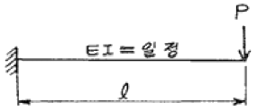
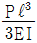
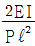
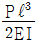
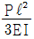
(정답률: 34%)
43. 철근콘크리트 구조에 대한 설명 중 틀린것은?
- 보 배근에서 피복두께는 주철 근의 보의 표면까지 거리를 말한다.
- 지름이 작은 철근을 사용하면 인장응력을 분산시킬 수 있어 균열방지 등에 유리하나 콘크리트 타설에 어려움이 생긴다.
- 보의 유효 춤을 크게 하면 응력중심거리와 단면2차 모멘트가 증가되기 때문에 저항모멘트가 커지고 처짐을 줄이는데 유리하다.
- 보의 폭이 좁고 춤이 지나치게 클 때에는 횡좌굴의 위험이 있다.
(정답률: 0%)
44. 강도설계법에서 fy = 400MPa, d = 500mm인 균형 보의 중립축거리(Cb)로 맞는 것은?
- 300mm
- 320mm
- 333mm
- 350mm
(정답률: 25%)
45. 그림과 같은 도형의 Y축에 대한 단면1차 모멘트는?
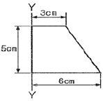
- 50.5cm3
- 51.5cm3
- 52.5cm3
- 53.5cm3
(정답률: 50%)
46. 직사각형 기둥의 핵심(core section) 밖에 편심하중
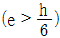
이 작용하는 직사각형 기둥단면의 응력분포로 알맞은 것은?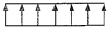
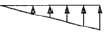
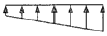
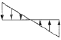
(정답률: 34%)
47. 부재단면의 성질에서 단면계수의 단위는?
- cm
- cm2
- cm3
- cm4
(정답률: 31%)
48. 길이가 5m이고 단면적이 5cm2인 막대에 6t의 축방향 인장력을 작용시켰을 때 늘어난 길이는? (단, 막대의 탄성계수 E = 2100t/cm2임)
- 0.19cm
- 0.29cm
- 3.5cm
- 5.04cm
(정답률: 19%)
49. 강도설계법에서 고정하중(D)과 활하중(L)이 작용하는 경우 하중 조합에 따른 소요강도는?
- 1.4D+1.5L
- 1.4D+1.7L
- 0.9D+1.5L
- 0.9D+1.7L
(정답률: 31%)
50. 압축이형철근(D29)의 기본 정착 길이로 알맞은 것은?(오류 신고가 접수된 문제입니다. 반드시 정답과 해설을 확인하시기 바랍니다.)
- 220mm
- 320mm
- 420mm
- 520mm
(정답률: 14%)
51. 전단과 휨만을 받는 철근콘크리트 보에서 콘크리트가 부담하는 전단강도는?
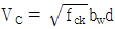
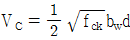
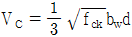
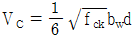
(정답률: 22%)
52. 다음과 같은 바닥구조형식의 유효폭(beff)의 크기는 얼마인가? (단, 보의 스팬은 4m)
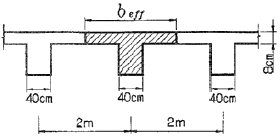
- 100cm
- 168cm
- 200cm
- 250cm
(정답률: 25%)
53. 처짐을 계산하지 않은 경우 각 조건에 따른 1방향 슬래브의 최소 두께가 옳지 않은 것은?
- 경간 3m의 단순지지 슬래브 : 150mm
- 경간 3m의 1단 연속 슬래브 : 100mm
- 경간 3m으 양단연속 슬래브 : 107mm
- 경간 1.5m의 캔틸레버 슬래브 : 150mm
(정답률: 40%)
54. 강도설계법에 의한 철근콘크리트 보의 설계시 균형철근비가 pb=0.0465 일 때, 인장철근의 최대철근비는? (단, fy = 400MPa)
- 0.0035
- 0.0349
- 0.0456
- 0.0930
(정답률: 20%)
55. 다음 그림과 같은 부재에 3개의 힘이 작용하여 평형을 이루었을 때 힘 p의 크기와 거리 x는?
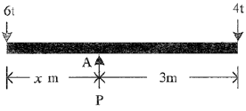
- P = 5t, x = 1.0m
- P = 10t, x = 1.0m
- P = 5t, x = 2.0m
- P = 10t, x = 2.0m
(정답률: 39%)
56. D25 (공칭지름 db = 25.4mm)를 압축 철근으로 사용 시 최소 겹침 이음 길이는? (단, fy = 400MPa)
- 300 mm
- 639 mm
- 732 mm
- 952 mm
(정답률: 27%)
57. 다음 중 건물의 부동침하 원인과 가장 관계가 먼 것은?
- 지반이 연약한 경우
- 이질기초를 한 경우
- 지하실을 강성체로 설치한 경우
- 경사지반에 놓인 경우
(정답률: 39%)
58. 표준관입시험에 대한 설명 중 옳지 않은 것은?
- N값으로 모래지반의 상대밀도를 추정할 수 있다.
- 사용되는 해머의 중량은 63.5kg이다.
- 해머의 낙하 높이는 76cm를 기준으로 한다.
- 25cm 관입할 때까지 타격회수 N값을 구하는 시험법이다.
(정답률: 50%)
59. 다음 그림과 같은 보에서 B지점의 수직반력 값은?
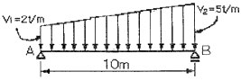
- 10t
- 15t
- 20t
- 25t
(정답률: 27%)
60. 다음 구조물의 부정정 차수는?
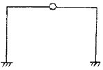
- 1차 부정정
- 2차 부정정
- 3차 부정정
- 4차 부정정
(정답률: 35%)
4과목: 건축설비
61. 다음 중 펌프(pump)에서공동현상(cavitation)의 방지 방법으로 가장 적당한 것은?
- 흡입양정을 낮춘다.
- 토출양정을 낮춘다.
- 마찰손실수두를 줄인다.
- 토출관의 직경을 굵게 한다.
(정답률: 46%)
62. 주개폐기, 분기 회로용 분기 개폐기나 자동차단기를 한곳에 모아서 설치한 것으로 간선과 분기회로의 연결 역할을 하는 설비는?
- 케이블 래크
- 배선용 비트
- 풀 박스
- 분전반
(정답률: 40%)
63. 처리대상인원 1000[인], 1인 1일당 오수량 0.2[m3], 평균 BOD는 200[ppm], BOD 제거율이 80[%]인 오수처리시설에서 유출수의 BOD 량은?
- 8 [kg/day]
- 10 [kg/day]
- 12 [kg/day]
- 15 [kg/day]
(정답률: 48%)
64. 다음의 양수펌프에 대한 설명 중 ( )안에 들어갈 말로 가장 알맞은 것은?
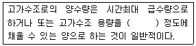
- 5분
- 30분
- 3시간
- 4시간
(정답률: 8%)
65. 보일러의 능력을 나타내는 출력의 표시 방법 중 정격출력에서 예열부하를 뺀 값으로, 정미출력에 5~10%를 가산하여 나타낼 수 있는 것은?
- 과부하 출력
- 발생열량
- 상당발열량
- 상용출력
(정답률: 알수없음)
66. 다음 중 통기방식의 종류에 속하는 것은?
- 벨 로즈 방식
- 소벤트 방식
- 스위블 방식
- 슬리브 방식
(정답률: 7%)
67. 광원에서 발산 광속 중 60~90[%]는 윗방 향으로 향하여 천장이나 윗벽 부분에서 반사되고, 나머지 빛이 아랫방향으로 향하는 방식의 조명기구는?
- 전반확산 조명 기구
- 반간접 조명 기구
- 직접 조명 기구
- 반직접 조명 기구
(정답률: 40%)
68. (복원 오류로 문제 및 보기 내용이 정확하지 않습니다. 내용을 아시는분께서는 오류 신고를 통하여 내용 작성부탁 드립니다. 정답은 2번입니다.)
- (복원중)
- (복원중)
- (복원중)
- (복원중)
(정답률: 8%)
69. 다음 중 발전기실의 위치 선정 시 고려 사항과 거리가 먼 것은?
- 변전실에서 멀고, 침수의 우려가 없을 것
- 실내 환기를 충분히 행할 수 있을 것
- 배기 배출구에 가급적 가까이 위치할 것
- 기기의 반입ㆍ반출 및 운전 보수면 에서 편리할 것
(정답률: 25%)
70. 액화석유가스(LPG) 가스용기(븅베)의 보관 온도는?
- 최대 10 이하
- 최대 20 이하
- 최대 30 이하
- 최대 40 이하
(정답률: 알수없음)
71. 다음의 복사난방에 대한 설명 중 틀린 것은?
- 방출 개방상태로 하여도 난방의 효과가 있다.
- 외기 온도의 급변에 따른 방열량 조절이 용이하다.
- 실내에 방열기를 설치하지 않으므로 바닥의 이용도가 높다.
- 실내 온도 분포가 균등하고 쾌감도가 높다.
(정답률: 54%)
72. 다음의 전열(傳熱)에 관한 설명 중 옳은 것은?
- 벽이 결로 등에 의해 습기를 함유하면 그 열관류의 저항은 크게 된다.
- 공기층의 단열효과는 그 기임성과는 관계없다.
- 벽체표면으로부터의 복사는 벽체의 온도가 높을수록 그 비율이 크게 된다.
- 같은 종류의 보온재이면 비중의 크기는 단열성능과 관계가 없다.
(정답률: 알수없음)
73. 다음의 건축설비에 관한 용어의 조합 중 잘못된 것은?
- PBX-전기기계설비
- LAN-구내정보통신망
- VAN-부가가치통신망
- ISDN-종합정보통신망
(정답률: 알수없음)
74. 손실 열량이 9750[㎉/h]인 사무실에 증기난방을 설치할때 주철제 방열기의 소요쪽(section) 수로 적당한 것은? (단, 주철제 방열기는 3세주 650mm, 1쪽(section)의 방열 면적은 0.15m2, 모든 상태는 표준상태로 가정한다.)
- 75절
- 100절
- 125절
- 150절
(정답률: 10%)
75. 길이 25m 의 증기배관에서 증기를 투입하기 전, 후의 관의 온도가 각각 4℃,115℃ 라고 하면, 이로 인해 발생되는 배관이음 팽창량은 얼마인가? (단, 배관이음 선팽창계수는 1.2×10-5)
- 16.7 mm
- 33.3 mm
- 34.5 mm
- 38.0 mm
(정답률: 38%)
76. 다음의 접지 공사에 대한설명 중 틀린 것은?
- 400V 이하의 가요전선관, 금속덕트, 버스덕트는 제3종 접지공사를 한다.
- 400V를 초과하는 저압용 기계 기구의 절대 및 금속 제외함은 특별 제3종 접지공사를 한다.
- 특별고압계기용 변성기의 2차측 전로는 제1종 접지공사를 한다.
- 저층의 위험을 저장 시설의 피뢰칭 설비는 특별 제3종 접지공사를 한다.
(정답률: 15%)
77. 다음의 급수 배관설계 및 시공 상의 주의사항에 대한 설 명중 옳지 않은 것은?
- 배관계통의 수압시험은 모든 배관 공사를 한 후에만 실시할 수 있다.
- 바닥 또는 벽을 관통하는 배관은 슬리브 배관을 한다.
- 초고층 건물은 과대한 급수 압으로 인한 피해를 줄이기 위해 급수 조닝을 행한다.
- 배관 계층에는 지수(stop)밸브를 달아서 급수계통의 수량 및 수압을 조정할 수 있도록 한다.
(정답률: 37%)
78. 다음의 2중덕트방식에 대한 설명 중 옳지 않은 것은?
- 부하특성이 다른 다수의 실이나 존에도 적용할 수 있다.
- 혼합 상자에서 소음과 진동이 생긴다.
- 실의 냉ㆍ난방부하가 감소되어도 취출공기의 부족현상이 없다.
- 덕트가 1개의 계통이므로 설비비가 적게 든다.
(정답률: 알수없음)
79. 배수배관에서 청소구 설치위치에 관한 기술 중 옳지 않은 것은?
- 배수 수평주관과 옥외배수관의 접속장소와 가까운 곳
- 배수 수직관의 최하부
- 배수관이 30°이상의 각도로 굽은 곳
- 배수 수평주관 및 배수 수평지관의 기전
(정답률: 알수없음)
80. 다음의 수송설비에 대한 설명 중 옳지 않은 것은?
- 엘리베이터는 직류 및 교류를 사용하는데 고속에는 직류가 흔히 사용된다.
- 에스컬레이터는 수송 능력이 엘리베이터의 10배 정도이며 경사각도는 30°이하로 한다.
- 이동보도는 승객을 수평 방향으로 수송하는데 이용되는 설비이다.
- 엘리베이터의 리미트 스위치(limit switch)는 키가 최하층을 벗어나 바다에 충돌할 때의 충격을 완화하기 위하여 피트에 설치하는 안전장치이다.
(정답률: 29%)
5과목: 건축관계법규
81. 철골조의 경우 피복두께와 상관없이 내화구조로 인정될 수 있는 것은?
- 내력벽
- 기둥
- 보
- 계단
(정답률: 50%)
82. 피뢰설비에 관한 기술 중 옳지 않은 것은?
- 접지는 환경오염을 일으킬 수 있는 시공방법이나 화학첨가물을 사용하지 아니할 것.
- 돌침은 건축물의 맨 윗부분으로부터 20센티미터 이상 돌출시켜 설치하되 규정에 의한 풍하중에 견딜 수 있는 구조일 것.
- 피뢰설비의 재료는 최소 단면적이 피복이 없는 동선을 기준으로 수뢰부 35제곱 밀리미터 이상으로 할 것.
- 피뢰설비의 인하도선을 대신하여 철골조의 철골구조물과 철근콘크리트조의 철근구조체 등을 사용하는 경우에는 전기적 연속성이 보장될 것
(정답률: 0%)
83. 다음 중 건축법에서 정의하는 건축설비가 아닌 것은?
- 배연설비
- 승강기
- 주계단
- 피뢰침
(정답률: 알수없음)
84. 승용승강기의 설치대수를 가장 많이 하여야 하는 용도는?
- 문화 및 집회시설중 관람장
- 문화 및 집회시설중 전시장
- 교육연구 및 복지시설
- 위락시설
(정답률: 25%)
85. 원칙적으로 부설주차장의 설치의무를 면제받을 수 있는 최대 주차대수는?
- 100대
- 200대
- 300대
- 제한이 없다
(정답률: 47%)
86. 건축물에 설치하는 지하층의 구조 및 설비기준은 거실바닥 면접의 합계가 얼마 이상인 층에 환기설비를 설치하도록 되어 있는가?
- 400m2 이상
- 600m2 이상
- 1000m2 이상
- 1500m2 이상
(정답률: 24%)
87. 노외주차장에는 주차대수 몇 대마다 1면의 장애인전용주차구획을 설치하여야 하는가?
- 20대
- 30대
- 40대
- 50대
(정답률: 0%)
88. 다음 중 건축물의 용도상 자동차관련시설에 해당하지 않은 것은?
- 주유소의 기계식 세차설비
- 정비학원
- 세차장
- 폐차장
(정답률: 20%)
89. 부설주차장의 설치기준에서 설치대수의 선정기준을 시설면적으로 하지 않은 시설물은?
- 위락시설
- 업무시설(외국인 공관 및 오피스텔 제외).
- 관람장
- 제2종 근린생활시설.
(정답률: 28%)
90. 건축물의 내부에 설치하는 피난계단의 구조기준이 잘못된 것은?
- 게단 실은 창문ㆍ출입구 기타 개구부를 제외한 당해 건축물의 다른 부분과 내화구조의 벽으로 구획할 것
- 계단실의 실내에 접하는 부분의 마감은 불연 재료로 할 것?
- 건축물의 내부에서 계단실로 통하는 출입구의 유효너비는 1.0m 이상일 것
- 건축물의 내부와 접하는 계단실의 창문등(출입구를 제외)은 망이 들어 있는 유리의 붙박이장으로서 그 면적을 각각 1m2 이하로 할 것
(정답률: 20%)
91. 옥상광장 또는 2층 이상의 층에 있는 노대 기타 이와 유사한 것의 주위에는 높이 얼마 이상 기준의 난간을 설치하여야 하는가?
- 1.0m
- 1.1m
- 1.2m
- 1.5m
(정답률: 64%)
92. 다음 중 맞벽건축ㆍ연결복도 또는 연결통로의 구조ㆍ크기 등에 관한 기준으로 옳지 않은 것은?
- 건축물과 복도 또는 통로의 연결부분에 방화셔터 또는 방화 문을 설치할 것
- 주요구조부가 방화구조일 것
- 마감 재료가 불연 재료일 것
- 너비 및 높이가 각각 5미터 이하일 것
(정답률: 19%)
93. 건축물에 설치하는 지하층의 구조 및 설비에 관한 기준으로 부적합한 것은?
- 거실의 바닥 면적이 50m2 이상인 층에는 직통계단외에 피난 층 또는 지상으로 통하는 비상탈출구 및 환기통을 설치할 것
- 지하층의 바닥 면적이 300m2 이상인 층에는 식수공급을 위한 급수전을 1개소 이상 설치할 것
- 비상탈출구의 유효너비는 0.75m 이상으로 하고, 유횻높이는 1.5m 이상으로 할 것
- 비상탈출구는 출입구로부터 2m 이상 떨어진 곳에 설치할 것
(정답률: 7%)
94. 주거에 쓰이는 바닥면적 합계가 200m2인 주거용 건축물에 배관하여야 할 급수관의 최소 지름은?
- 15mm
- 20mm
- 25mm
- 32mm
(정답률: 알수없음)
95. 건축법상 아파트의 경우 에너지 절약계획서를 제출하여야 하는 세대수는 몇 세대 이상인가?
- 30세대
- 50세대
- 100세대
- 300세대
(정답률: 14%)
96. 다음의 창문 등의 차연 시설에 관한 기준 내용 중 ( )안에 들어갈 말로 알맞은 것은?
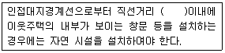
- 1m
- 2m
- 3m
- 4m
(정답률: 54%)
97. 부설주차장의 총주차대수 규모가 8대 이하인 자주식 주차장(지평 식에 한한다)의 구조 및 설비기준으로 옳지 않은 것은?
- 보도와 차도의 구분이 없는 너비 12m 미만의 도로에 접하여 있는 부설주차장은 그 도로를 차로로 하여 주차단 위구 획을 배치할 수 있다.
- 보도와 차도의 구분이 있는 12m 이상의 도로에 접하여 있고 주차대수가 5대 이하인 부설주차장은 당해 주차장의 이용에 지장이 없는 경우에 한하여 그 도로들 차로로 하여 직각주차형식으로 주차단위구획을 배치할 수 있다.
- 출입구의 너비는 2.5m 이상으로 한다. 다만, 막다른 도로에 접하여 있는 부설주차장으로서 시장ㆍ군수 또는 구청장이 차량의 소통에 지장이 없다고 인정하는 경우에는 2m 이상으로 할 수 있다.
- 보행인의 통행로가 필요한 경우에는 시설물과 주차단위구획 사이에 0.5m 이상의 거리를 두어야 한다.
(정답률: 20%)
98. 바닥면적의 합계가 30000m2인 의료시설(정신병원,요양소 및 격리병원을 제외한다)을 건축할 경우 주차장업 시행법 시행령에서 규정한 최소한의 부설주차장 주차대 수는?
- 10대
- 15대
- 20대
- 30대
(정답률: 14%)
99. 건축설비의 설치에 관한 공사를 발주하는 자를 의미하는 용어는?
- 건축주
- 현장관리인
- 공사시공자
- 공사감리자
(정답률: 39%)
100. 시설물의 부지인근에 부설주차장을 따로 설치할 수 있는 인근부지의 범위는 당해 부지의 경계선으로부터 부설주차장의 경계선까지의 도보거리로 몇 미터 이내이어야 하는가?
- 300미터
- 400미터
- 600미터
- 800미터
(정답률: 16%)